contents | previous | next IN one of those villages, immediately under the ridge of chalky hills, called the South Downs; where the soil changing suddenly to a strong clay, renders the country deep, and the roads bad; there dwelt, a few years since, the rector of a neighbouring parish, of the name of Lessington. In the village where he lived he was only the curate; choosing his residence there, because the house was larger and more commodious, than that which belonged to his own living three miles distant. His family consisted of a wife, two sons, and four daughters. One of the sons had a fellowship at Oxford; the other, was a younger partner in a respectable tradesman's house in London.
) View image of 2 View image of 2The daughters were reckoned handsome; the two eldest had been for some years the toasts at the convivial meetings in the next market towns; the third was now a candidate for an equal share of rustic admiration, and her claims were generally allowed; but the youngest, who was about eighteen, when this narrative commences, though she was still considered as a child by her sisters, and treated as such by her mother; was thought by some of the few persons who happened to see her, to be much the handsomest of the four, though her beauty was of a very different character from that of her sisters. Perhaps in these days of refinement, the imagination might be in some degree assisted, by the romantic singularity of her name; she was called Rosalie at the request of a lady of the Catholic religion, the wife of a man of very large fortune, who sometimes inhabited an old family seat, about three miles farther from the hills: Mrs. Lessington had been for some years her most intimate friend, and accepted with pleasure her offer of answering for, and giving her name, to the youngest of her girls. Mrs. Vyvian, the daughter of
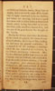 View image of 3an illustrious Catholic family, being born at Naples, had received the name of the female saint so highly venerated in the two Sicilies; and before her marriage, had lived a good deal alone with an infirm father at Holmwood House, which having descended to her mother from noble ancestors, became hers, and was part of the great fortune she brought to Mr. Vyvian. During the solitary years when she attended the couch of a parent, the victim of complicated diseases, the society of Mrs. Lessington had been her greatest consolation. It continued so till her marriage—a marriage which she was compelled to consent to, by her father's peremptory commands. Mrs. Vyvian afterwards passed some years on the continent with her husband, and returned to England mother of three children, a son and two daughters. And whenever this family inhabited the old mansion-house of Holmwood, Rosalie passed all her time with them. When young Vyvian was about thirteen, his sisters twelve and eleven, the young ladies were so much attached to their companion, that Mrs. Vyvian, to indulge them, took her
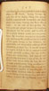 View image of 4 with them to London, and afterwards to their estate in the North. Young Vyvian, the only son of the family, being sent abroad, Rosalie remained with his mother and sisters above two years, making only short visits at home. At the end of that period, Mr. Vyvian thought proper to have his daughters introduced into the world, and in a stile of life to which Rosalie could have no pretensions; she therefore returned to the parsonage, and though she could not but be sensible of the great change in her situation; her good sense, and the peculiar mildness of her disposition, enabled her, if not to conquer her regret, at least so far to conceal it, that though generally pensive, she was neither sullen nor melancholy, and entered with placid resignation into a way of life, so different from that to which she had (she now thought unfortunately) been accustomed.—Her mother, who probably remembered that she had been sensible of something like the same uneasy sensation when she bade adieu to the society of her friend, then Miss Montalbert, to marry Mr. Lessington, seemed to
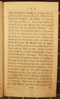 View image of 5 pity, though she forbore to notice, the dejection which was occasionally visible in her youngest daughter, in despite of her endeavours to hide it. As to her father, he treated her as he did the rest, with general kindness, but no marked affection. Her sisters were not unkind to her so long as she affected no superiority, but seemed better pleased to be considered as too young to be admitted of their parties, than to make one, where she knew she should find no enjoyment, and they were on their parts content to leave out, as long as they could, a person who would be at least a formidable competitor for the prize of beauty. The eldest was courted by a gentleman farmer of considerable property in the county, the second by an attorney in a neighbouring town, and as these lovers were accepted, parties of pleasure were continually made for the Miss Lessingtons. Sometimes to the sea-coast, or to races or cricket matches; Mr. Lessington attended his daughters on these expeditions, till the eldest was married. The care of Miss Catharine and Miss Maria, was then left to her, and
) View image of 6 View image of 6the Vicar of Mayfield returned to the duties of his parishes, and his farm. On these occasions, Mrs. Lessington and her youngest daughter being left alone, their conversation sometimes turned on the family of Vyvian. It was a subject of which Rosalie was never weary, though it was not always that her mother would indulge her with talking upon it. Rosalie was tenderly and gratefully attached to Mrs. Vyvian, even more than to her young friends; and frequently mentioned to her mother, how much she had been hurt at remarking, during the latter part of her stay in the family, that this amiable and excellent woman was extremely unhappy. One day when they were sitting at work together, this conversation was renewed—"You hear nothing, Madam, (said Rosalie to her mother), of our neighbours at Holmwood Park, being to come down soon."—"Nothing (replied her mother, coldly); I suppose, from what Mr. Allingham said, (Mr. Allingham was the Catholic priest of the neighbouring town), that we shall not see them here this year."—Rosalie sighed.—
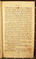 View image of 7"He told me (added Mrs. Lessington), that Mrs. Vyvian was so much indisposed when he saw her in town, that the physicians talked of ordering her to Cheltenham; it is more than two months since I have had a letter from her."—Rosalie sighed again.—"It is her mind (said she), that preys upon her frame; and will, I am afraid, destroy her." "I hope not (replied Mrs. Lessington), for I think her spirits have been always much the same since I knew her. Perhaps they are not mended by Mr. Vyvian's having renounced his religion, and by having her children brought up Protestants, contrary to his promise, when he himself changed; besides, you know he is a harsh and hasty man, positive, violent, and ill-natured enough to make a woman, like Mrs. Vyvian, unhappy, if there is no other cause." "Ah! that other (said Rosalie), I have heard a great deal about it." "About what?" cried Mrs. Lessington, in a tone of surprise. "About the—the—the lover, (replied Rosalie, blushing.) That Mrs. Vyvian was
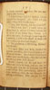 View image of 8"I don't know (said her mother, colouring as if by sympathy), who could tell you, child, of any such foolish story." "Nay, dear Madam, but was it not so?" "Was it not, how? I really know nothing about it, and yet I believe nobody saw so much of my friend Mrs. Vyvian, as I did at that time; for though it was long after I married, I used to be almost as much with her as when we were both single." "The gentleman is still living, Madam," said Rosalie. "I again assure you Rose, (replied her mother, peevishly), that I know nothing of—of any gentleman. But I think I heard your father come into his study—Do child ask him for the key of the closet above." Rosalie obeyed; but she well knew her father was not in his study, and saw that her mother only sent her to seek him, that she might escape from conversation, which for some reason or other, she was strangely unwilling to continue. This was not the first
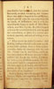 View image of 9time Rosalie had remarked, that her mother solicitously avoided recounting any circumstance that used to happen in her girlish days, at those periods when she was connected with the family of Montalbert: and if ever she unconsciously began to speak of Miss Montalbert, now Mrs. Vyvian, she either stopped as soon as she recollected herself, and changed the conversation, or spoke in a manner particularly guarded, and only of trifling occurrences. "What can be my mother's reason? (said Rosalie, musing to herself as she went to walk in their little garden), there is some mystery certainly; surely the marriage with the man Mrs. Vyvian was so attached to, could not have been broken off on her account?—Impossible! for though my mother, I believe, has been a very handsome woman, she certainly never could be compared to her friend; who even now, in ill health, and half heart-broken, as she is, is much more beautiful than either of her daughters." Rosalie sighing when she thought of Mrs. Vyvian's illness, and regretting that she did not this year come into the country, felt all
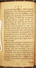 View image of 10the cold and blank regret, which departed pleasure leaves. She wished now, that she had passed less time in the Vyvian family, where she had been accustomed to the conversation of Mrs. Vyvian, of which she was particularly fond; and to a manner of life, very different from that which she was now in—still more different, from what it was probable she would be expected to enter into, when her two elder sisters were both married: her father having lately said, half laughingly, and as if he supposed it would please her, that she should then go out with Maria; appear at assemblies, and try to get a husband too; for he wanted to get his girls off his hands as fast as he could. Rosalie felt that she had an invincible aversion to this plan of dressing and going out in hopes of getting, as her father termed it, an husband. She was convinced, that to be addressed by such men as the husband of her eldest sister, or the man to whom the second was soon to be married, would render her completely miserable; for it seemed but too probable, that her father would not allow her a negative.
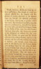 View image of 11 Youth, however, dwells not long on remote possibilities—But though no acute uneasiness assailed her, the languor and dejection of Rosalie increased as the autumn came on; solitude was infinitely preferable to the society, such as was at present within her reach; but seclusion so perfect as that she was now condemned to, depressed her spirits. In every other period of her being at home, at this season of the year, her elder brother had been there also, who being very partial to her, delighted to instruct her; but now this dear brother was gone into the North with one of his college friends, and was to be at home only for a few days before his return to Oxford. She thought every body was gone to the North, for the Vyvian family were perhaps there by this time, if Mrs. Vyvian's health allowed her to leave Cheltenham—and never had she felt so dejected and forlorn. The hill which arose immediately behind the vicarage house, afforded a view, even half way up, of a great extent of country, and Holmwood Park, the old family seat of Mr. Vyvian, though at near three miles distance, seemed to be with-
) View image of 12 View image of 12in five minutes walk. Rosalie had now a melancholy pleasure, in viewing it from the high grounds, as the setting sun blazed on the western windows, while the characters of the inhabitants were forcibly recalled to her mind. Mr. Vyvian, a man of very extensive possessions, and the head of an ancient Catholic family, had been rather received as an husband by Miss Montalbert, because her father commanded her to receive him, than for any other reason; for so far were they from having any sympathy, that their religion was the only thing in which they agreed, and even that tie of union between them did not long exist; for soon after the death of his wife's father, he renounced the church of Rome, and going through all ceremonies of reconciliation to that of England, entitled himself to represent a borough that belonged to him, and became a member of parliament. From that time, the tutors that had been entrusted with the education of his son, were removed; his daughters, contrary to the promise he had at first made to his wife, were no longer suffered to go to mass, or to be in-
) View image of 13 View image of 13structed by the old priest, who had for a great number of years resided in their mother's house. And Mrs. Vyvian, who was strongly attached to the religion of her ancestors, was from that period a solitary and insolated being in the midst of her family. Mr. Vyvian was one of those men, who, naturally haughty and tyrannical, had never known, because he never would endure, the least contradiction. His temper resembled that of those reasonable beings one sometimes sees among the common people, who not unfrequently beat their children till they make them cry; and then beat them for crying. Just so he contrived to do exactly what he knew would make his wife completely miserable, and then quarrelled with her because she could not (though she endeavoured to do so most sincerely), always conceal her wretchedness. Till lately, she had found the estrangement of her daughters, who too much resembled their father, compensated in a great measure by the attentive gratitude of Rosalie, who used to pass much of her time at Holmwood, while Mrs. Vyvian was there alone, and her family remain- ) View image of 14 View image of 14ed in London. But lately she appeared to have lost all pleasure, even in visiting this favourite seat; and though when she did write to Mrs. Lessington, or to Rosalie, her letters expressed all her former regard, yet these letters became every day more rare; at length she hardly ever wrote to Rosalie; an air of languor and disquiet pervaded those parts of the letters addressed to her mother, that Rosalie sometimes saw; for it now and then happened, that Mrs. Lessington received letters which her daughter knew to be from Mrs. Vyvian, the contents of which she never disclosed, and did not seem pleased to be questioned upon them.—These Rosalie concluded were filled with the murmurs of an oppressed heart, that found a melancholy indulgence in pouring its hopeless sorrows into the bosom of an old and faithful friend; though she herself had never heard one repining sentence. The venerable priest, now the only inhabitant, except servants of the solitary mansion of Holmwood, had been accustomed to walk over now and then to Barlton-Brook (the
) View image of 15 View image of 15name of the parish where the Lessington family resided); and Rosalie, who honoured his character, and knew how highly Mrs. Vyvian esteemed him, was never happier than when she was allowed to make his tea for him, or to walk with him part of the way home. During the present summer, however, these visits had become less frequent, and at length entirely ceased; a terrible deprivation to Rosalie, though none of the rest of the family seemed conscious that it had happened. Rosalie at length remarked it to her mother, who answered drily, that Mr. Hayward was probably ill. "May I not walk over some day to Holmwood, Mamma, and see how he does?" "I do not know when I can spare you, my dear," was the reply and the conversation dropped. Another, and another week passed, and Mr. Hayward did not appear. Rosalie then enquired news of him, of one of those itinerant fishmongers who travel round the country, and who constantly carried his wares to Holmwood. The man assured her that he
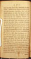 View image of 16 had that day seen Mr. Hayward in good health. Rosalie soon afterwards discovered, but with extreme vexation, that her old friend forbore to visit her, because it had been hinted to him, that the suspicion of his influencing her on religious subjects was likely to be very injurious to her future prospects in the world: Mr. Grierson, who had married her elder sister, and Mr. Blagham, the intended husband of the second, having declared their apprehensions of her becoming a Papist; in which opinion two young men who had very much admired her, also agreed. The sisters of one of them protesting that she was sure Miss Rose Lessington was disposed to that religion, which made her give into such mopish ways, and always to affect solitude, like nuns, and such sort of people. Thus deprived of the innocent pleasure of conversing with a man, who from her infancy she had considered almost as a second father; a cypher at home; and rather suffered as one of the family, than seeming to make a part of it, necessary to the happiness of the rest, Rosalie had no other resource than in her own mind against the unvarying
) View image of 17 View image of 17 medium of life. Her mother, though not more ignorant than the generality of women in middling life, had received no better education than a country boarding school afforded, which five and thirty years ago were much less celebrated for the accomplishments they communicated, than they are at present. Since that period, she had studied the utile, rather than the dulci. Having before her marriage lived very much in the family of Montalbert, though by no means in the stile of an humble companion (for she had a small independent fortune), she had accustomed herself to undertake many little domestic duties for the friend she loved, and after her marriage, she had a family, which kept her constantly occupied; so that never having had her curiosity raised in regard to books, and never having been accustomed to read, she had now no relish even for books of amusement; and wondered at the eagerness she sometimes heard her acquaintance express for them. It may easily be believed, that thus disposed, she had no collection of books likely to amuse her daughter; who had long since exhausted all the information
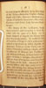 View image of 18or entertainment afforded, by an odd volume of the Tatler—Robinson Crusoe—Nelson's Feasts and Fasts—Harvey's Meditations — a volume of Echard's Gazetteer—Mrs. Glass's Cookery—and Every Lady her own Housekeeper. The library of Mr. Lessington, though more extensive and occupying a room dignified with the name of a study, was not better adapted to beguile the solitary hours of a very young woman. It consisted solely of sermons—Polemic's—such publications as related to Questions on Infant Baptism, and Elaborate Defences of the Thirty-nine Articles—Clarendon's History—Rapin, and bad Translations of Mezerai and Froissart—an old History of Rome, in black letter—Josephus—Thomas à Kempis—Elucidations of difficult Parts of Scripture—and Treatises on the Nature of the Soul. Among all these it was the history only that could attract Rosalie; and during this solitary summer, she became a tolerable historian: though she did not find it either contributed to enlarge her philanthropy, or furnish her with rules for the conduct of her life; since she flattered
) View image of 19 View image of 19herself, that beings so dishonest and despicable as modern history represents, are found only in those elevated regions of human existence where it was never likely to be her lot to move. During her frequent visits to the family of Vyvian, where that language was generally spoken, Rosalie had learned to speak French fluently; could read well, and speak a little Italian, which Mr. Hayward had taken great pleasure in teaching her. The little acquirements were, she knew not for what reason, more the objects of her sisters' envy than any other of the advantages her being with the Miss Vyvians might have given her over them. She saw with surprise and concern, that though her sisters were as little, as she now was herself, in company where to speak foreign languages could be of the slightest advantage, yet that her being qualified to do so, vexed and humbled them. She therefore concealed what indeed there was now little merit, and less difficulty in concealing; and having no books to read in either language, and no longer any opportunity of conversing with Mr. Hayward, she
) View image of 20 View image of 20felt with infinite concern that this source of amusement and knowledge would very soon be lost to her. The only pleasure she now found was in drawing; in which, though no great proficient, she was far enough advanced to find herself improve very materially, by following, and continually practicing the few rules she had learned. To seat herself on the turf of the down above the house, on the root of a thorn, or one of those beech trees which were scattered about the foot of the hill, and make sketches of detached pieces of the extensive landscape stretched before her; or of the old and fantastic trees that formed her shady canopy, was now become her only enjoyment; and very sincerely did she regret, and very reluctantly did she obey, the summons, she too frequently received to return to the house, either to make tea for some accidental visitors of her new brother-in-law's acquaintance, or to superintend a syllabub in the summer-house. These parties calling at the parsonage, now became frequent, for this new member of the family lived in the vale, a few miles from Barlton Brook; and
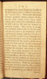 View image of 21 the house of his father-in-law lay directly in the horse way to what is called in that country, "up the hills." Those hills (the South Downs), gradually decline towards the sea. On the coast, within a few years, many bathing places have been established, where the sick and the idle pass the summer or autumnal months. The variety of people thus collected, make a visit to the sea-coast, a pleasurable jaunt to the inhabitants of the neighbouring country: and Mr. Grierson, a man perfectly at ease in his circumstances, and lately married to one of the most celebrated beauties of the county, failed not to amuse his bride and her friends with many of these tours. His future brother-in-law, Blagham the attourney, who lived at Chichester, was a great promoter of what he called "a little sociability." He gratified at once two passions; the love of what he called pleasure, and the prospect of future advantage, to which he always looked forward with peculiar earnestness. While he was bustling about with Grierson and his wife, together with his "own intended," as he chose to call her, he was displaying his skill in ordering
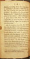 View image of 22dinners, in hiring boats for water-parties, in consoling "the ladies," when they were sick, and "cutting jokes upon them when they got better. In making sure bets at Broad * Halfpenny, for "Egad, Sir, he always knew what he was about." And in hedging well at poney races; and while this went on, "Egad, Sir, he never lost sight of the main chance—not he: egad, Sir, he had all his eyes about him." And it was true, that while thus entered into what he called "the enjoyments of life, and a little sociability," he made acquaintance among the yeomanry, or the few of that rank of men who are still called so: among men, however, who had money to put out at interest, and who employed him to find for them good securities, and to transact other matters for them. So that though a young man in the honourable profession of an attorney, and newly established in the already well-stocked city of Chichester, he was considered as very likely to make his fortune;
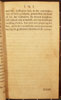 View image of 23 and Mr. Lessington had, in the contemplation of such a prospect, granted him the hand of the fair Catharine, his second daughter; rich indeed only in herself—in very handsome wedding clothes, that were now preparing for her; and in her connections and acquaintance among the gentlemen's families of the county.
|
){kind=link}
){kind=link}
){kind=link}
){kind=link}
){kind=link}
){kind=link}
){kind=link}
){kind=link}
){kind=link}
){kind=link}
){kind=link}
){kind=link}
){kind=link}